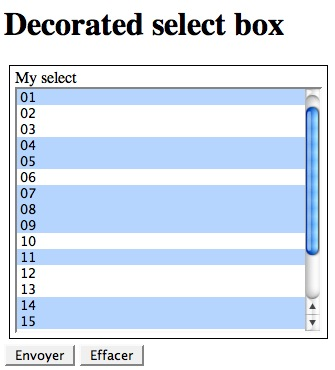
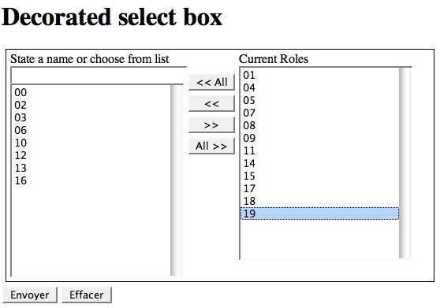

This is a multiple select box :

User can select several options by holding a meta-key when clicking a new option. It is a common widget for user interaction on the Internet.
But it is a difficult widget to use. Forget holding the meta-key when selecting a new option and you will loose all your selection. And there is no way to undo it. And there isn't a confirmation dialog.
The idea is to make this multiple select box easier to use.

There is 3 part :
To interact with those options, there is 3 different ways :
By default, the decoration will use configuration of the select box (size attribute, label, ...)
You can bypass this by defining specific options to the decoration.
The same way, you can de-activate some user interaction.
Here is the code for a multiple select box :
<div class="decorated" id="mySelectBox1">
<label for="mySelect1">My select</label>
<select name="mySelect1" id="mySelect1" multiple="multiple" size="15">
<option value="00">00</option>
<option value="01" selected="selected">01</option>
<option value="02">02</option>
<option value="03">03</option>
<option value="04" selected="selected">04</option>
<option value="05" selected="selected">05</option>
<option value="06">06</option>
<option value="07" selected="selected">07</option>
<option value="08" selected="selected">08</option>
<option value="09" selected="selected">09</option>
<option value="10">10</option>
<option value="11" selected="selected">11</option>
<option value="12">12</option>
<option value="13">13</option>
<option value="14" selected="selected">14</option>
<option value="15" selected="selected">15</option>
<option value="16">16</option>
<option value="17" selected="selected">17</option>
<option value="18" selected="selected">18</option>
<option value="19" selected="selected">19</option>
</select>
</div>
Here is the javascript code needed to decorate it :
<script language="JavaScript" type="text/javascript">
$(document).ready(function(){
$("#mySelectBox1").selectmadeeasier();
});
</script>
You can change some parameter by using an array in argument (the whole option list is available above). Here is we change the selected elements' label :
<script language="JavaScript" type="text/javascript">
$(document).ready(function(){
$("#mySelectBox1").selectmadeeasier({
lblCurrentElement : "My new label for selected Roles"
});
});
</script>